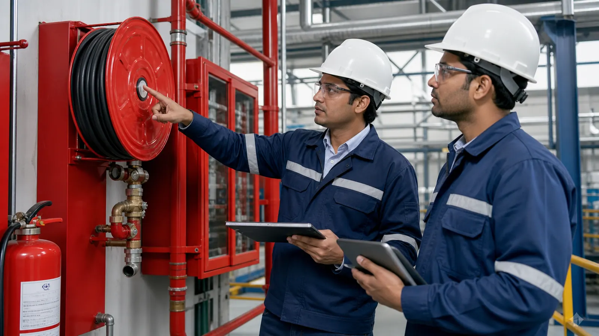

Learning from Precursors to Prevent Disasters
Every major industrial accident is preceded by dozens of warning signs—near-misses, unsafe conditions, and procedural violations. The difference between a safe facility and a catastrophic failure often lies in your ability to capture, analyze, and act on these signals.
B2B Industrial Solutions helps you establish a non-punitive, data-driven incident reporting culture where employees feel empowered to report hazards without fear. We implement structured Root Cause Analysis (RCA), Corrective and Preventive Actions (CAPA), and trend analysis to turn "free lessons" into actionable safety improvements.
Reporting System Components
Reporting Channels
Digital and anonymous reporting mechanisms for unsafe acts, conditions, and near-miss events.
SetupRoot Cause Analysis
5 Whys, Fishbone Diagrams, and Fault Tree Analysis to investigate beyond immediate causes.
MethodsCAPA System
Structured Corrective and Preventive Action tracking with responsibility assignment and closure verification.
ProcessTrend Analysis
Periodic review of incident data to identify patterns, high-risk areas, and systemic vulnerabilities.
ReportsInvestigation Methodology
Our structured approach ensures thorough investigations and effective corrective actions.
| Step | Activities | Deliverables |
|---|---|---|
| Immediate Response | Secure scene, provide first aid, prevent recurrence | Incident flash report |
| Investigation Team | Form cross-functional team, collect evidence, interview witnesses | Investigation plan |
| RCA Execution | 5 Whys, fishbone analysis, timeline reconstruction | Root cause report |
| CAPA Implementation | Define actions, assign owners, set deadlines, track to closure | Action tracking register |
